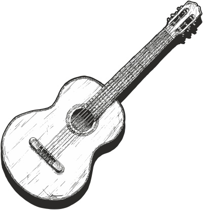

Shawn Wang's Songbook
pengxiang-wang.github.io
声明：这是我个人的 Songbook，包含我感兴趣歌曲的和弦进行及分析、歌词及解析、在不同乐器（吉他、手风琴）上的实现。详情见个人网站此文章：https://pengxiang-wang.github.io/posts/my_songbook_project
Contents
- (Public Domain) | Песня о Тревожной Молодости（歌唱动荡的青春）
- (Public Domain) | Ще не вмерла Україна（乌克兰国歌《乌克兰仍在人间》）
- (Public Domain) | Гимн СССР（苏联国歌《牢不可破的联盟》）
- (Public Domain) | Катюша（喀秋莎）
- A-ha | Take On Me
- Adele | Chasing Pavements
- John Lennon | Imagine
- Kris Kristofferson | Me and Bobby McGee
- 李克勤 | 红日
- 朴树 | 白桦林
- 五月天 | 拥抱
- 赵雷 | 我记得
- 周杰伦 | 稻香
- 周杰伦 | Mojito
- 周杰伦 | 牛仔很忙
(Public Domain) | Песня о Тревожной Молодости（歌唱动荡的青春）
苏联歌曲 | 1958
- Eb
- За
Am бота у нас прос Dm та Am я,（时刻挂在我们心上）
ЗаBm7b5 бота E7 наша та Am кая,（是一个平凡的愿望）
ЖиAm ла бы страна род F на C я,（愿亲爱的家乡美好）
ИDm нету других G за C бот. E7 （愿祖国呀万年长） - И
Am снег, и G ве F тер,（听，风雪喧嚷）
ИG звёзд ночной по C лёт,（看，流星飞翔）
МеF ня Gm мое A7 сер Dm дце,（我的心向我呼唤）
В треAm вожную даль E7 зо Am вёт.（去动荡的远方） - Пускай нам с тобой обоим,（哪怕灾殃接着灾殃）
Беда грозит за бедою,（也不能叫我们颓唐）
Но дружбу мою с тобою,（让我们来结成朋友）
Одна только смерть возьмёт.（我们永远有力量）
Ch. - Пока я ходить умею,（只要我还能够行走）
Пока глядеть я умею,（只要我还能够张望）
Пока я дышать умею,（只要我还能够呼吸）
Я буду идти вперёд.（就一直走向前方）
Ch. - И так же, как в жизни каждый,（就像每个青年一样）
Любовь ты встретишь однажды,（你也会遇见个姑娘）
С тобою, как ты, отважно,（她将和你一路前往）
Сквозь бури она пойдёт.（勇敢穿过风和浪）
Ch. - Не думай, что всё пропели,（你别以为到了终点）
Что бури все отгремели,（别以为风暴已不响）
Готовься к великой цели,（快走向那伟大目标）
А слава тебя найдёт.（去为祖国争荣光）
Ch.
- 歌曲是1958年苏联电影《在那一边》 (По ту сторону)的主题曲，由苏联著名作曲家巴赫慕托娃（Алекса́ндра Никола́евна Па́хмутова）谱写。
(Public Domain) | Ще не вмерла Україна（乌克兰国歌《乌克兰仍在人间》）
乌克兰歌曲 | 1865
- Ще не вмерла України і слава, і воля,（乌克兰你自由意志世世代代传颂）
Ще нам, браття-Українці, усміхнеться доля. （同胞手足命运依旧向我们展露笑容）
Згинуть наші воріженьки, як роса на сонці.（敌人犹如点点朝露在阳光下消融）
Запануєм і ми, браття, у своїй сторонці.（我们热爱这片热土在此衍生繁荣） - Душу й тіло ми положим за нашу свободу,（甘愿为了我们的自由献出躯体灵魂）
І покажем, що ми, браття, козацького роду.（我们都是哥萨克一族我们同源同种）
Ch.
- 乌克兰国歌《乌克兰仍在人间》，由乌克兰作曲家、乌克兰希腊礼天主教会神父米卡依罗·维尔毕茨基（Михайло Вербицький）作于1865年，1917年这首歌成为短暂建立的乌克兰人民共和国的国歌，很快被苏联取代。苏联解体后重新成为乌克兰国歌。
- 本歌词为最新2003年版。
(Public Domain) | Гимн СССР（苏联国歌《牢不可破的联盟》）
苏联歌曲 | 1938
- D
C C Союз неру Em шимый рес F публик сво C бодных（自由共和国的联盟牢不可破） Dm Сплотила навеки Великая G Русь.（伟大的罗斯将屹立不倒）
ДаC здравст G вует создан Am ный волей на Em родов（万岁，依靠人民意志而建立起的）
ЕF диный, мо C гучий Со D ветский Со G юз!（统一而强大的苏维埃联盟） C Славься, Отечес G тво
наAm ше свобод Em ное,（光荣啊，我们自由的祖国） F Дружбы народов надёжный оплот!（各民族友爱的坚固堡垒） F Зна G мя со C ветское, Dm зна E мя на Am родное G （苏维埃旗帜，人民的旗帜） F Пусть от по C беды к D победе G ведёт!（引领着我们进一步胜利） - Сквозь грозы сияло нам солнце свободы,（自由的阳光照耀着我们）
И Ленин великий нам путь озарил.（伟大的列宁指明前进方向）
Нас вырастил Сталин – на верность народу,（斯大林教导我们应忠于人民）
На труд и на подвиги нас вдохновил!（并激励着我们去建立功勋）
Ch. - Мы армию нашу растили в сраженьях.（我们的红军在战斗中成长）
Захватчиков подлых с дороги сметём!（不留情面地扫清一切敌人）
Мы в битвах решаем судьбу поколений,（在斗争中决定几代人命运）
Мы к славе Отчизну свою поведём!（而为祖国战斗并赢取荣耀）
!>（最后转回主和弦终止）
- 主要使用卡农进行的一种，将二级和弦变为大三和弦，有神圣感。
- 苏联国歌，中文又名《牢不可破的联盟》，作于1938年，由瓦西里·列别捷夫-库马奇（Васи́лий Ива́нович Ле́бедев-Кума́ч）作词，亚历山大·亚历山德罗夫（Александр Васильевич Александров）作曲。这首歌曲是二战期间苏联政府决定制定的一首能激励民心的新国歌，于1944年3月15日取代《国际歌》，成为苏联国歌和现在的俄罗斯国歌（重新填词）。
- 该曲歌词有三个版本：1944年版、1977年版和2000 年的俄罗斯版。上述歌词为1944年版。
(Public Domain) | Катюша（喀秋莎）
苏联歌曲 | 1938
Am E7 Gm D Dm Am E7 Am Am Расцветали яблони и E7 груши,（正当梨花开遍了天涯）
Поплыли туманы над реAm кой;（河上飘着柔曼的轻纱） C Вы Am7 хо F ди A ла на Dm берег Ка Am тюша,（喀秋莎站在峻峭的岸上） Dm На вы Am сокий E7 берег, на кру Am той.（歌声好像明媚的春光） C Вы Am7 хо F ди A ла на Dm берег Ка Am тюша,（喀秋莎站在峻峭的岸上） Dm На вы Am сокий E7 берег, на кру Am той.（歌声好像明媚的春光） - Выходила, песню заводила（姑娘唱着美妙的歌曲）
Про степного, сизого орла,（她在歌唱草原的雄鹰）
Про того, которого любила,（她在歌唱心爱的人儿）
Про того, чьи письма берегла.（她还藏着爱人的书信） - Ой, ты песня, песенка девичья,（啊，这歌声姑娘的歌声）
Ты лети за ясным солнцем вслед,（跟着光明的太阳去飞吧）
И бойцу на дальнем пограничье（去向远方边疆的战士）
От Катюши передай привет.（把喀秋莎的问候传达） - Пусть он вспомнит девушку простую,（驻守边疆年轻的战士）
Пусть услышит, как она поёт,（心中怀念遥远的姑娘）
Пусть он землю бережёт родную,（勇敢战斗保卫祖国）
А любовь Катюша сбережёт.
（喀秋莎爱情永远属于他） - Расцветали яблони и груши,（正当梨花开遍了天涯）
Поплыли туманы над рекой;（河上飘着柔曼的轻纱）
Выходила на берег Катюша,（喀秋莎站在峻峭的岸上）
На высокий берег, на крутой.（歌声好像明媚的春光）
- 《喀秋莎》是苏联最有名的歌曲之一，也是俄罗斯曲调的经典标志。作于 1938 年，由马特维·勃兰切尔（Матве́й Исаа́кович Бла́нтер）作曲，米哈伊尔·伊萨科夫斯基（Михаил Исаковский）作词。
- 这是一首为苏联士兵送行的爱情歌曲。喀秋莎是女性名字叶卡捷琳娜（Екатерина）的爱称，歌词中的喀秋莎是一个深爱着前线战士的女孩，处处表达了她对心上人的爱与劝勉保卫祖国的决心。
A-ha | Take On Me
Hunting High and Low | 1985
- X to X
!+X Dm9 Dm9 Dm Dm Dm Dm G G C C F F C/E C/E Dm Dm G G C C F F C/E C/E Dm Dm G G F/A F/A Gsus2 Gsus2 G G Dm Dm Talking away G G , C C I don't know what F F I'm to C/E C/E say
I'llDm Dm say it anyway G G , to C C day's another F F day to C/E C/E find you Dm Dm Shying a G G way, Am Am I'll be coming for your F F love, okay? C C Take G/B G/B on Am Am me F F (Take on me) C C Take G/B G/B me Am Am on F F (Take on me) C C I'll G/B G/B be Am Am gone F F
In a day orC C two G G F/A F/A G G - So needless to say
I'm odds and ends
But I'll be stumbling away
Slowly learning that life is okay
Say after me
It's no better to be safe than sorry
Ch. Em Em Bb Bb Em Em Bb Bb Dm Dm G G Dm Dm G G Dm Dm G G Dm Dm G G C C F F C/E C/E Dm Dm G G C C F F C/E C/E Dm Dm G G F/A F/A Gsus2 Gsus2 G G - All things that you say, yeah
Is it life or just to play my worries away?
You're all the things I've got to remember
You're shying away
I'll be coming for you anyway
!>（最后没有转回） - Take on me (Take on me)
Take me on (Take on me)
I'll be gone
In a day
Take on me (Take on me)
Take me on (Take on me)
(fade out)
Adele | Chasing Pavements
19 | 2008
- Eb to Ab
Cm Am ... Gm7/Bb Em7/G ... - I've
Cm7 Am7 made up my mind
Don'tGm/Bb Em/G need to think it over
If I'mFm/Ab Dm/F wrong, I am right
Don'tG7 E7 need to look no further
this ain'tFm/Ab Dm/F lust, I Bb7 G7 know this is Eb C lo Cm7 Am7 ve, Gm Em but - If
Eb C I tell the world, I'll Gm/D Em/B never say enough, 'cause it was Cm Am not said to you
And that'sG7 E7 exactly what I need to do, if Abmaj7 Fmaj7 I end Gm/Bb Em/G up Bb7 G7 with you Abmaj9 Fmaj9 Should I give up, Gm Em or Cm7 Am7 should I Fm7 Dm7 just keep chasing Fm7/Ab Dm7/F pavements, Ab9 F9 even if it Gm Em leads no G7 E7 where?
OrAb9 F9 would it be a Gm Em waste? Cm7 Am7 Even Fm7 Dm7 if I knew my Fm7/Ab Dm7/F place, should I leave it th G7 E7 ere? Ab9 F9 Should I give up, Gm Em or Cm7 Am7 should I Fm7 Dm7 just keep chasing Fm7/Ab Dm7/F pavements, Ab9 F9 even if it Gm Em leads nowhere Eb C yee... - I
Cm Am build myself up
AndGm/Bb Em/G fly around in circles, waiting Fm/Ab Dm/F as my heart drops
And myG7 E7 back begins to tingle
FinalAb F ly, could Gm/Bb Em/G this be Bb7 G7 it, or
Ch. Ab9 F9 Should I give up, or should I Gm7 Em7 just keep chasing pavements, even Fm7 Dm7 if it leads Bb7b9 G7b9 nowhere?
Or would itAb9 F9 be a waste? Even if I G7 E7 knew my place, should I F7b9 D7b9 leave it there? Should I Bb7b9 G7b9 give up?
Or should IAb9 F9 just keep on Gm Em , Cm7 Am7 chasing Fm7 Dm7 pavements Ab F ?
Should IGm7 Em7 just keep on Cm7 Am7 , chasing Fm7 Dm7 pavements Ab F ? Ab7 F7 Oh- Bb7 G7 oh...
Ch.
- Adele 早期代表作，第二支单曲，收录于第一张专辑 《19》。
- 这首歌是关于失恋的，Chase pavements 直译为“和人行道赛跑”，意译是“做无用的事”。Adele 有过一段 6 个月的感情，直到她发现对方在酒吧里与他人暧昧，致使她重新思考了这段关系，她在问自己：“你在追求什么？你只是在 chasing an empty pavement.” Adele 从酒吧里被赶出来后，当时走在路上写下了这首歌的歌词。可以说，这些歌词的主题就是对对方的深爱和决心了结过去的矛盾，也是很多人失恋后的心声。
Verse 1 先表达出自己放下的决心，但又说自己对他不是欲望而是真爱（在 “this ain't lust” 前应该有一个转折）。注意，第二、三句的意思不是“不必要去想来想去自己做的对还是错”，第三句的意思是“如果我让他觉得错了，那我就做对了”。
Verse 2 表达的意思是，只有对方才懂她的感受，她不会告诉别人，只会告诉他。其实从我的角度，Adele 表达了一层意思就是自己不善说出爱，但她是深爱着的，这是她的一个遗憾吧，所以最后一句“如果还能继续，向他表达出来是她最应该做的”。
Verse 3 是同样的，想走出去，却在原地打转，经历人在失恋时的那些身体痛苦，最后发现，这就是结果，改变不了（could this be it）。
Chorus 部分将这些矛盾直白地说了出来。放弃？还是继续无用地 chasing pavements？Adele 反复地问着，直到最后也没有给出答案。
整体而言，歌词不是非常地有逻辑，好像语无伦次，就是一个人面对失恋痛苦时写出的只言片语。但是，经历过的人一定都会理解，我也会与她产生共鸣。
John Lennon | Imagine
Imagine | 1971
- C
C Cmaj7 F C Cmaj7 F C Imagine there's Cmaj7 no hea F ven
It's easy if you try
No hell below us
Above us, only skyF Imagine Am/E all the peo Dm7 ple F/C G Living for C/G to G7 day, I... - Imagine there's no countries
It isn't hard to do
Nothing to kill or die for
And no religion too
Imagine all the people
Living life in peace, you... F You may G say I'm a C dreamer Cmaj7 E7
But I'm not the only one
I hope someday you'll join usF And the G world will C be as one C6/A Cmaj7/B - Imagine no possessions
I wonder if you can
No need for greed or hunger
A brotherhood of man
Imagine all the people
Sharing all the world, you...
Ch.
Kris Kristofferson | Me and Bobby McGee
Kristofferson | 1970
- A, B
- (If it sounds country, man, that's what it is! That's a country song. Yeah, okay. 1,2,3,4;1,2,3,4)
A 1 A 1 Busted flat in Baton Rouge, and headin' for the trains
Feelin' nearly faded as myE7 57 jeans
Bobby thumbed a diesel down, just before it rained
Took us all the way to New OrA 1 leans A 1 I took my harpoon out of my dirty red bandana
And was blowin' sad while Bobby sang theD 4 blues
With them windshield wipers slappin' time
AndA 1 Bobby clappin' hands, we finally E7 57 sang up every song that driver A 1 knew D 4 Freedom's just another word for A 1 nothin' left to lose E7 57 Nothin' ain't worth nothin', but it's A 1 free D 4 Feelin' good was easy, Lord, when A 1 Bobby sang the blues E7 57 Feelin' good was good enough for me
Good enough for me and Bobby McA 1 Gee B 1 - From the coalmines of Kentucky to the California sun
Bobby shared the secrets of my soul
Standin' right beside me, Lord, through everything I done
Every night she kept me from the cold - Then somewhere near Salinas, Lord, I let her slip away
Lookin' for the home I hope she'll find
And I'd trade all my tomorrows for a single yesterday
Holdin' Bobby's body next to mine
Ch. B 1 La... La... La... me and Bobby Mc F#7 57 Gee F#7 57 La... La... La... me and Bobby Mc B 1 Gee
（fade out）
- 典型的乡村音乐1、4、5三个和弦。
- 使用交替低音。
转到 B 调时，F#7 和弦可以利用 1 弦空弦的属七音，实现为 244320；E 和弦实现为简单的开放和弦即可。
中间的 1-2-b3-3-4 连接，A 调可以全在 5 弦进行，B 调建议跨到 4 弦，方便接到 E 和弦。 - Janis Choplin，蓝调风味很重。我觉得 Kristofferson 的原版更符合这首歌的心境，我也更喜欢。
- 这首歌讲述了一对情人（歌词中的“我”和 Bobby McGee）旅途中的一个故事。一天，天上下着雨，他们在巴吞鲁日去新奥尔良的路上花完了钱，只能走到火车站，于是 Bobby 拦下一辆卡车载他们一程。一路上气氛越来越好，“我”吹起了口琴伴奏，两人和司机唱着一首首歌。在 Chorus 部分，主人公体会到了与女友旅行自由美好的感觉，发出了一声声感慨，“feeling good was easy enough”。
他们去了很多城市，这一路上，女友 Bobby 和他分享了自己的情感和经历，无时无刻不陪伴他，守护他。然而，在 加州的 Salinas 这个地方，他们分手了，引发的主人公之后的无限后悔与追思。因此，这首歌其实是一首悲伤、遗憾的歌。这首歌经常在某个时间点和我的心情契合，也是我最喜欢的歌之一。
李克勤 | 红日
红日 | 1992
- C
C G/B Am 啊... G F Em Dm G C G/B Am G F Em7 Dm7 G F Em G/D C 命运就算颠沛流离 G/B 命运就算曲折离奇 Am 命运就算恐吓着你 G 做人没趣味
别流F 泪 心 G 酸 更不 C 应 G/B 舍 Am 弃
我愿F 能 一生 G 永远陪伴 C 你
Ch.- 啊...
C G/B Am G F Fm C G C 一生之中兜兜转转 G/B 那会看清楚
徬徨时Am 我也试过独坐一角 G 像是没协助
F 在某 Fm 年 那幼 C 小 G/B 的 Am 我
跌倒过F 几多几多落泪在雨 G 夜滂沱 - 一生之中弯弯曲曲我也要走过
从何时有你有你伴我给我热烈地拍和
像红日之火 燃点真的我
结伴行 千山也定能踏过 - 让晚
Em 风 轻轻 Am 吹过
伴送著Dm7 清幽花香像是在祝 G 福你我
让晚Em 星 轻轻 Am 闪过
闪出你Am7/G 每个希冀如浪 F 花 快要沾湿 G 我 F 喔 Em 喔... G/D
Ch.
（重复 Instrumental、verse 1、verse 2、Pre-Ch.）
!>（重复 5 遍）
- 全曲为典型的顺阶低音进行。
朴树 | 白桦林
我去2000年 | 1999
- G
Em Am Adim Ddim B7 E7 Adim Ddim B7 E7 Em Am Em Am 静静的 Em/B Am/E 村庄 Adim Ddim 飘着白的 B7 E7 雪 Adim Ddim 阴霾的天空下 B7 E7 鸽子飞 Em Am 翔 E A 白桦树刻着 Am Dm 那两个名 G C 字 G/B C/E 他们发誓 Am Dm 相爱 B7 E7 用尽这一 Em Am 生 - 有一天战火烧到了家乡
小伙子拿起枪奔赴边疆
心上人你不要为我担心
等着我回来在那片白桦林 Em Am 天空依然 Am Dm 阴霾 依然 D G 有鸽子在飞 G C 翔 Em Am 谁来证明 Am Dm 那些没有墓 Adim Ddim 碑的爱情和生 B7 E7 命 Em Am 雪依然在 Am Dm 下那村庄 D G 依然安 G C 详 G/B C/E 年轻的人 Em Am 们消 B7 E7 失在白桦 Em Am 林 - 噩耗声传来在那个午后
心上人战死在远方沙场
她默默来到那片白桦林
望眼欲穿地每天守在那里 - La...
她说他只是迷失在远方
他一定会来
来这片白桦林
Ch. - 长长的路呀就要到尽头
那姑娘已经是白发苍苍
她时常听他在枕边呼唤
来吧亲爱的来这片白桦林 - 在死的时候他喃喃地说
我来了等着我在那片白桦林
五月天 | 拥抱
五月天第一张创作专辑 | 1999
- B to ?
Emaj7 Fmaj7 Ebm Em C#m7 Dm7 B C Emaj7 Fmaj7 脱下长日 Ebm Em 的假面， C#m7 Dm7 奔向梦幻 B C 的疆界 Emaj7 Fmaj7 南瓜马车 Ebm Em 的午夜， C#m7 Dm7 换上童话的 B C 玻璃鞋 - 让我享受这感觉，我是孤傲的蔷薇
让我品尝这滋味，纷乱世界的不了解 Emaj7 Fmaj7 昨天太近， Ebm Em 明天太远， C#m7 Dm7 默默聆听 B C 那黑夜 Emaj7 Fmaj7 晚风吻尽 Ebm Em 荷花叶， C#m7 Dm7 任我醉倒 B C 在池边 Emaj7 Fmaj7 等你清楚看见 Ebm Em 我的美， C#m7 Dm7 月光晒 B C 干眼泪 Emaj7 Fmaj7 哪一个人 Ebm Em C#m7 Dm7 ， B C 爱我 Emaj7 Fmaj7 将我的手 Ebm Em C#m7 Dm7 ， B C 紧握 Emaj7 Fmaj7 抱紧我， Ebm Em 吻我，喔 C#m7 Dm7 爱， B C 别走 - 隐藏自己的疲倦，表达自己的狼狈
放纵自己的狂野，找寻自己的明天 - 向你要求的誓言，就算是你的谎言
我需要爱的慰藉，就算那爱已如潮水
Ch.
（再重复“哪一个人”两次）
- 全曲为简单的 4321 进行。
- （此曲当时成为各大校园吉他社或音乐相关社团的初学者入门歌曲。）
调弦向下调低1品，按照 C 调弹。 - 五月天早期代表作，收录于第一张专辑。这首歌直接描写同性的情感与欲望，对于当时（1998年）趋于保守的社会风气来说是一大突破，对于台湾同性恋文化有着举足轻重的意义与代表性。
- 这首歌本意是关于男同性恋的，也可以视为情歌。歌词主要表达了一种男同性恋者的孤独、希望被理解、希望得到爱的情绪。其中的意象大都来自作家白先勇的小说《孽子》，例如荷花池位于台北二二八和平公园，是著名的男同聚集地；蔷薇象征着男同。
赵雷 | 我记得
署前街少年 | 2022
- E
E C E/Eb C/B C#m7 Am7 Bsus4 Gsus4 Asus2 Fsus2 Bsus4 Gsus4 E C
呜...- 我
E C 带着比身体重的 E/Eb C/B 行李，游入尼罗 C#m7 Am7 河底，经过几道 Bsus4 Gsus4 闪电，看到一堆 Asus2 Fsus2 光圈，不确定 Bsus4 Gsus4 是不是这 E C 里；
我看到几个人站在一起，他们拿着剪刀，摘走我的行李，擦拭我的脑袋，没有机会返回去。 - 直
E C 到我听见 E/Eb C/B 一个声音 C#m7 Am7 ，我 Bsus4 Gsus4 确定是 Asus2 Fsus2 你，可你 Bsus4 Gsus4 怎记得 E C 我；
我带来了另界的消息，可我怎么告知你，注定失忆着相遇。 - 我记得这里是片树林，后面有个山坡，山坡上的枣树，每当秋天到来，我们把枣装满口袋；
我记得除了朋友我还做过你的叔父，你总喜欢跟在我的屁股后面，只是为了那几个铜钱。 - 我记得我们曾是恋人，后来战争爆发，你上战场后就再也没有回来，直到收不到你的信；
我们总这样重复分离，却要重新开始，相互送别对方，说着来世再见，再次失忆着相聚。 E C 呜， B/Eb G/B 快来抱抱 C#m7 Am7 ， Bsus4 Gsus4 快来抱抱 Asus2 Fsus2 我， Bsus4 Gsus4 呜 E C ...
呜，快来抱抱，快来抱抱我，呜...E C E/Eb C/B C#m7 Am7 Bsus4 Gsus4 Asus2 Fsus2 Bsus4 Gsus4 E C E C E/Eb C/B C#m7 Am7 Bsus4 Gsus4 Asus2 Fsus2 Bsus4 Gsus4 E C - 在路上我遇到了一位故去多年的人，她是如此年轻，扎着过肩马尾，露出和你一样的笑；
她和我讲了很多关于你成长的故事，在星空的另一端，思念从未停止，如同墓碑上的名字。 - 不要哭我最亲爱的人，我最好的玩伴，时空是个圆圈，直行或是转弯，我们最终都会相见；
在城池的某个拐角处，在夕阳西下时，在万家灯火的某一扇窗纱里，人们失忆着相聚。
Ch1. （最后一个“呜”替换为“我终于找到你”） E C 嘟... E/Eb C/B C#m7 Am7 Bsus4 Gsus4 Asus2 Fsus2 Bsus4 Gsus4 E C
嘟...- 呜，快来抱抱，快来抱抱我，我终于找到你。
- 全曲为一种顺阶低音进行：17654，接5转回1。和弦共享1级和弦的5、1两个音。
- 在 Verse 2 前分解和弦，之后扫弦。
分解和弦：共享的5、1两个音即为1、2弦空弦，在 5 弦上演奏低音，可以实现原曲中的击勾弦和滑奏：4到7品滑奏，4品勾2品，2品击4品。
扫弦：除了 E/D# 外，全部利用3、4、5弦上的强力和弦加1、2弦空弦构成开放和弦。这样的好处是与分解和弦逻辑一致，方便记忆，也可以应用滑奏等技巧。 - E：x79900
- E/D#：x66400
- C#m7：x46600
- Bsus4：x24400
- Asus2：x02200
- 其中，E/D# 是借助 E 和弦的 C 指型（而不是 E 指型）构造的，它与下一个和弦 C#m7 呈对称形状，比较容易转换。
- 赵雷2022年专辑《署前街少年》的主打歌。
- 这首歌是讲母爱的，从大了讲是生命轮回、人生。歌曲的设定是一个孩子刚出生时，能记得和母亲的前世姻缘。Verse 1 描述了孩子在手术台来到人世间的过程，用了很多比喻，如脐带比作行李，羊水比作尼罗河。Pre-chorus 孩子见到了妈妈，确定了就是前世的那个她，很想告诉她，但是自己太小不会说话，只有通过 Chorus 的“呜，快来抱抱，我终于找到你” 这种简单的形式表达。后面的 verse 就是孩子在回忆与妈妈前世的经历。他和妈妈做过青梅竹马、叔父、恋人。在 verse 4 还讲到了孩子的外婆讲述妈妈成长的故事。
这首歌在知乎上有很多大佬的精彩解读，大多数是归结为母爱。赵雷对母亲的感情深重，这也是很出名的。不过换个角度，我更倾向于看得更大一些，即所有值得人们珍惜的感情，这在 verse 5 里有很突出的体现。在有限的时间里，永远珍惜你爱的人，即使最后分别，也不要悲伤，因为人们总会在另一个世界的某一个角落失忆着相聚。
周杰伦 | 稻香
魔杰座 | 2008
Csus2 G Am7add11 Em7 D7sus4 Gsus4 Csus2 - 对这个世界如果你有太多的抱怨
跌倒了就不敢继续往前走
为什么人要这么的脆弱 堕落
请你打开电视看看
多少人为生命在努力勇敢的走下去
我们是不是该知足
珍惜一切 就算没有拥有 - 还记得你说家是唯一的城堡 随着稻香河流继续奔跑
微微笑 小时候的梦我知道
不要哭让萤火虫带着你逃跑 乡间的歌谣永远的依靠
回家吧 回到最初的美好 - 不要这么容易就想放弃 就像我说的
追不到的梦想 换个梦不就得了
为自己的人生鲜艳上色 先把爱涂上喜欢的颜色
笑一个吧 功成名就不是目的
让自己快乐快乐这才叫做意义
童年的纸飞机 现在终于飞回我手里 - 所谓的那快乐 赤脚在田里追蜻蜓追到累了
偷摘水果被蜜蜂给叮到怕了 谁在偷笑呢
我靠着稻草人吹着风唱着歌睡着了
哦 哦 午后吉他在虫鸣中更清脆
哦 哦 阳光洒在路上就不怕心碎
珍惜一切 就算没有拥有
Ch.
Ch. Csus2 G Am7add11 Em7 D7sus4 Gsus4 Csus2 Csus2 G Am7add11 Em7 D7sus4 Gsus4 Csus4 C
- 全曲为卡农进行的一种。和弦共享1级和弦的2、5两个音。
- 共享的2、5两个音即为1、2弦空弦。和弦按法：
- Asus2：x02200
- E：普通的 E
- F#m7add11：244200（拇指按根音）
- C#m7：x42400
- B7sus4：x24200（拇指按根音）
- Esus4：022200分解和弦时可以省略一些弦，如 Esus4 弹成 Asus2 等。此外，偶尔有 Asus2 到 A 的击弦。
- 扫弦：除了 E/D# 外，全部利用3、4、5弦上的强力和弦加1、2弦空弦构成开放和弦。这样的好处是与分解和弦逻辑一致，方便记忆，也可以应用滑奏等技巧。
- E：x79900
- E/D#：x66400
- C#m7：x46600
- Bsus4：x24400
- Asus2：x02200
- 其中，E/D# 是借助 E 和弦的 C 指型（而不是 E 指型）构造的，它与下一个和弦 C#m7 呈对称形状，比较容易转换。
周杰伦 | Mojito
最伟大的作品 | 2022
- C
Dm7 E7 Am7 Dm7 G13 Cmaj7 Bm7b5 E7 Am7 Am/G F B7(b9) E F E - 麻烦给
Dm7 我的爱人 E7 来一杯Mo Am7 jito
我喜欢Dm7 阅读她微 E7 醺时的眼 Am7 眸 A7
而我的Dm7 咖啡 G7 糖不用 Cmaj7 太多 Fmaj7
这世界Bm7b5 已经因为她甜得过 E7 头 F7 E7 - 没有跟她笑容一样浓郁的雪茄
就别浪费时间介绍收起来吧
拱廊的壁画 旧城的涂鸦
所有色Bm7b5 彩都因为 E7 她说不出 Am 话 G F - 这爱不
E7 落幕 忘了心事的 Am7 国度
妳所在E7 之处 孤单都被征 Am7 服 A7
铁铸的Dm7 招牌 G7 错落着 Cmaj7 就像 Fmaj7
一封封Bm7b5 城市献给 E7 天空的情 Am7 书 A7
当街灯Dm7 亮起 G7 Havana Cmaj7 漫步 Fmaj7
这是世Bm7b5 上最美丽 E7 的那双人 Am7 舞 Am E E Am Dm Am E Am Dm7 E7 Am7 （缤纷的老爷车跟着棕榈摇曳，载着海风私奔漫无目的） Dm7 E7 Am7 A7 （古董书摊漫着时光香气，我想上辈子是不是就遇过你） Dm7 G7 Cmaj7 Fmaj7 （喧嚣的海报躺在慵懒的阁楼阳台） Bm7b5 E7 （而你是文学家笔下的那一片海） F7 E7
（重复 verse 1）
Ch.E7 Am7 E7 Am7 A7
铁铸的Dm7 招牌 G7 错落着 Cmaj7 就像 Fmaj7
一封封Bm7b5 城市献给 E7 天空的情 Am7 书 A7
当街灯Dm7 亮起 G7 Havana Cmaj7 漫步 Fmaj7
这是世Bm7b5 上最美丽 E7 的那双人 Am 舞 E7 Am E7 Am7 C B E7 Am Am6
周杰伦 | 牛仔很忙
我很忙 | 2007
- C
C F G C C C/Bb C/A C/Ab G C G C - 呜
C 啦啦啦火车笛 随 F 着奔 C 腾的马蹄
小C 妹妹吹着口琴 夕 G 阳下美了剪影
我C 用子弹写日记 介 F 绍完 D/F# 了风 G 景
接下来换介绍我自C 己 G C - 我
C 虽然是个牛仔 在 F 酒吧 C 只点牛奶
为C 什么不喝啤酒 因为 G 啤酒伤身体
很C 多人不长 C/Bb 眼睛 嚣 C/A 张都靠武 C/Ab 器
赤G 手空拳就缩成蚂 C 蚁 G C C 不用麻烦了 不用麻烦了 不用麻烦不用 F 麻烦了 不用麻烦了 C 你们一起上 我在赶时间 每天决斗观众都 G 累了 英雄也累了 C 不用麻烦了 不用麻烦了 副歌不长你们 F 有几个 一起上好了 C 正义呼唤我 G 美女需要我 牛仔很忙 C 的 G C C F C G C F D/F# G C G C
（心爱ㄟ 妳走去叨位 我那ㄟ拢没看到妳）- 我啦啦啦骑毛驴 因为马跨不上去
洗澡都洗泡泡浴 因为可以玩玩具
我有颗善良的心 都只穿假牛皮
喔跌倒时尽量不压草皮 - 枪口它没长眼睛 我曾经答应上帝
除非是万不得已 我尽量射橡皮筋
老板先来杯奶昔 要逃命前请你
顺便喂喂我那只小毛驴
Ch. C F C G C F D/F# G C G C
Ch.